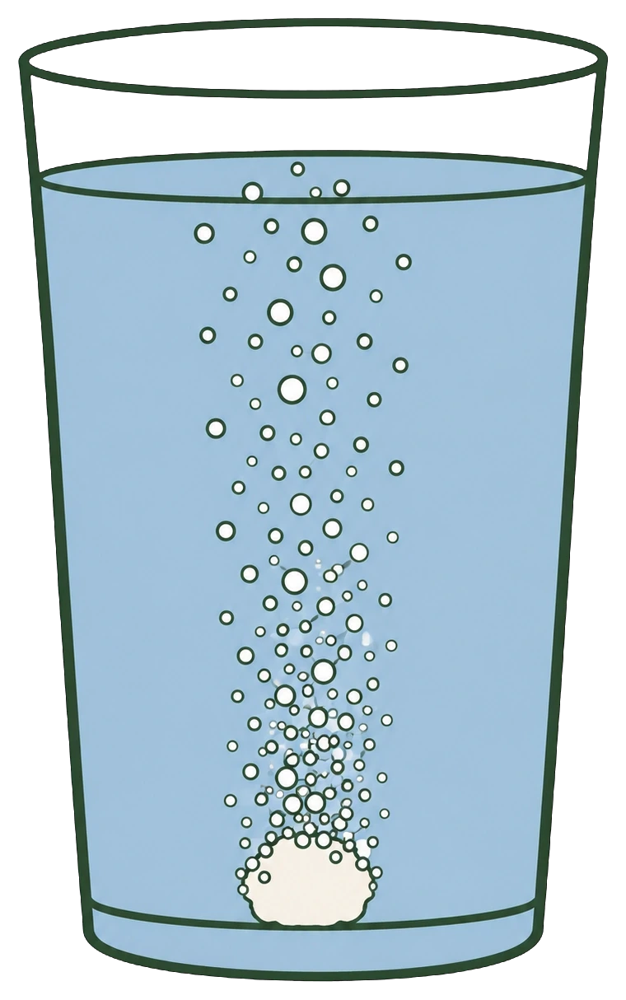

- Magsäcken har pH 1–2 och skyddas av ett slemlager
- Halsbränna är magsyra som kommit upp i matstrupen
- Antacida innehåller baser som neutraliserar syran
- Bukspottet neutraliserar maten när den lämnar magsäcken
- Saliven neutraliserar syror i munnen och skyddar tänderna
Neutralisation sker inte bara i kemisalen. Din egen kropp gör det hela tiden, och på flera ställen.
Magsäcken
Magsäcken innehåller magsaft som är mycket sur — pH ligger ofta runt 1 till 2.
Det behövs. Den sura miljön hjälper till att bryta ner maten, och den dödar många av de bakterier som följer med.
Magsäcken klarar sig tack vare ett slemlager som skyddar väggarna. Matstrupen har inte det skyddet.
Halsbränna
Kommer magsyra upp i matstrupen börjar det svida och bränna. Det kallas halsbränna.
Mot tillfällig halsbränna används läkemedel som heter antacida. De innehåller basiska ämnen — till exempel kalciumkarbonat eller magnesiumhydroxid.
När basen möter magsyran sker en neutralisation. Vätejonerna reagerar med basen, surheten minskar och pH stiger.
Lägg märke till att tabletten inte suger upp syran som en svamp. Den reagerar med den. Det är kemi, inte absorption.
- Var bubblorna kommer ifrån
- Om tabletten ser hel eller upplöst ut
- Vad som händer med tabletten över tid

När maten lämnar magsäcken
Maten som lämnar magsäcken är fortfarande starkt sur, och tarmen skulle skadas av den.
Därför skickar bukspottkörteln ut bukspott som innehåller vätekarbonatjoner. De reagerar med syran och höjer pH.
Det behövs av två skäl. Tarmen skyddas, och de enzymer som arbetar där fungerar bäst när miljön inte längre är starkt sur.
Munnen och tänderna
Bakterier i tandbeläggningar bryter ner socker och bildar syror samtidigt.
När pH nära tandytan sjunker börjar mineraler lösas ut ur emaljen. Händer det ofta ökar risken för karies.
Saliven motverkar det. Den innehåller ämnen som kan binda vätejoner och därmed höja pH, så att munnen återgår till det normala efter att du ätit.
Det är också därför många tandkrämer är svagt basiska.
- Magsaften har pH omkring 1–2
- Matstrupen saknar magsäckens skydd — därav halsbränna
- Antacida reagerar kemiskt med syran, de absorberar den inte
- Bukspottet innehåller vätekarbonatjoner som höjer pH i tolvfingertarmen
- Saliven motverkar de syror bakterier bildar i munnen
Neutralisation sker inte bara i kemilaboratoriet. Reaktioner mellan syror och baser är viktiga i kroppen, i hemmet, vid vattenrening och i många industriella processer.
Magsäcken och halsbränna
Magsäcken innehåller magsaft som är starkt sur. pH ligger ofta omkring 1–2. Den sura miljön behövs bland annat för matsmältningen och för att döda många mikroorganismer som följer med maten.
Magsäcken har ett skyddande slemlager som gör att den klarar den sura miljön. Matstrupen har inte samma skydd. Om magsyra kommer upp i matstrupen kan det därför börja svida och bränna. Det kallas halsbränna.
Vid tillfällig halsbränna kan man använda läkemedel som kallas antacida. De innehåller ämnen som kan reagera med och neutralisera magsyran. Exempel är kalciumkarbonat och magnesiumhydroxid. När de reagerar med syran minskar mängden oxoniumjoner och pH stiger.
Antacida tar alltså inte bort syran genom att absorbera den. De reagerar kemiskt med den.
När maten lämnar magsäcken
När maten lämnar magsäcken och kommer till tolvfingertarmen är den fortfarande sur. Tarmen skulle kunna skadas om den sura blandningen inte förändrades.
Bukspottkörteln avger därför bukspott som bland annat innehåller vätekarbonatjoner, \(\ce{HCO3-}\). Vätekarbonat kan reagera med syran och höja pH.
Det är viktigt eftersom många av de enzymer som arbetar i tunntarmen fungerar bäst när miljön inte längre är starkt sur.
Kroppen använder alltså syra-basreaktioner för att skapa rätt kemisk miljö på olika platser i matsmältningssystemet.
Munnen och tänderna
Neutralisation är också viktig i munnen. Bakterier i tandbeläggningar kan bryta ner socker och andra kolhydrater och samtidigt bilda syror. När pH nära tandytan sjunker kan mineraler börja lösas ut ur tandemaljen. Om detta sker ofta ökar risken för karies.
Saliven hjälper till att motverka detta. Den innehåller bland annat vätekarbonat och andra ämnen som kan binda vätejoner och därmed minska surheten. Saliven hjälper på så sätt pH i munnen att återgå mot sitt normala värde efter att vi har ätit.
Många tandkrämer innehåller också ämnen som bidrar till att hålla en miljö där syrornas angrepp på tänderna begränsas.
Blodet får inte ändra pH
Standardtexten visar hur kroppen neutraliserar syror i magen, tarmen och munnen. Men det finns ett ställe där kravet är mycket hårdare än så.
Blodets pH måste hålla sig mellan ungefär 7,35 och 7,45. Avviker det mer än några tiondelar blir man allvarligt sjuk, och vid större avvikelser livshotande.
Samtidigt producerar kroppen syror hela tiden. Varje cell som förbränner näring bildar koldioxid, och koldioxid ger kolsyra i vatten. Vid hårt arbete tillkommer mjölksyra.
Att pH ändå står stilla beror på en buffert — samma sak du mötte i syrornas fördjupning.
Hur den fungerar
Blodet innehåller kolsyra och vätekarbonatjoner samtidigt, i jämvikt med varandra.
Tillförs syra reagerar vätekarbonatjonerna med den och blir kolsyra. Syran fångas upp, och pH ändras knappt.
Tillförs bas går det åt andra hållet: kolsyran avger en proton och blir vätekarbonat. Basen fångas upp.
Systemet fungerar alltså åt båda hållen, och det är just vätekarbonatjonens dubbla natur — den kan vara både syra och bas — som gör det möjligt.
Och andningen hjälper till
Bufferten har dessutom en utväg som få andra buffertar har.
Kolsyra kan sönderfalla till vatten och koldioxid, och koldioxid kan andas ut. Blir blodet för surt andas du snabbare och gör dig av med koldioxid, vilket förskjuter jämvikten och höjer pH.
Det är därför man börjar hyperventilera vid vissa förgiftningar, och varför andningen påverkas av kroppens syrabalans.
Om modellen: standardtexten beskriver neutralisationer där syra tillförs och tas om hand. Blodets buffert är något annat — ett system som står emot förändring i båda riktningarna, utan att någon tillsätter något alls.
- Sura rengöringsmedel löser kalk
- Basiska rengöringsmedel löser fett
- Blanda dem aldrig — de förbrukar varandra och kan bli farliga
- pH justeras vid vattenrening och i industrin
- Vid spill på hud: spola med vatten, neutralisera aldrig
Neutralisation används också utanför kroppen — i hemmet, i vattenverk och i fabriker.
Rengöring
Olika sorters smuts kräver olika medel, och skillnaden bygger på syror och baser.
Kalkavlagringar löses med syra. Därför innehåller avkalkningsmedel ofta citronsyra. Kalken reagerar med syran och löses upp.
Fett och matrester löses med bas. Därför innehåller propplösare ofta natriumhydroxid.
Blanda aldrig
Här kommer en regel som är värd att ta på allvar.
Blanda aldrig ett surt och ett basiskt rengöringsmedel.
Två saker händer, och båda är dåliga. För det första neutraliserar medlen varandra — de förbrukas, och rengöringseffekten försvinner. Du får ett medel som inte gör någonting.
För det andra kan reaktionen utveckla mycket värme. Blandningen kan börja koka och stänka frätande vätska omkring sig.
Det finns alltså ingenting att vinna och mycket att förlora.
Vattenrening
pH är viktigt både när dricksvatten framställs och när avloppsvatten renas.
Vatten som är för surt eller för basiskt kan skada ledningar, påverka djur och växter, och störa de processer som pågår i ett reningsverk.
Därför tillsätts syra eller bas för att justera pH till rätt nivå.
Industrin
Många tillverkningsprocesser fungerar bara inom ett bestämt pH-område. Det gäller livsmedel, läkemedel, papper och kemikalier.
Är en lösning för sur tillsätts en bas. Är den för basisk tillsätts en syra. Genom att mäta pH hela tiden kan processen hållas där den ska vara.
Vid spill
Ett sista och viktigt fall.
I laboratorier och industrier kan neutraliserande material användas vid spill — men bara enligt bestämda rutiner. Man häller inte en stark bas över en stark syra på måfå. Reaktionen kan utveckla så mycket värme att situationen blir farligare än den var.
Och en regel utan undantag: får du en syra eller bas på huden eller i ögat ska du aldrig försöka neutralisera den. Spola med stora mängder vatten i stället.
- Kalk löses med syra, fett med bas
- Blandning ger värmeutveckling och sämre rengöring
- pH-justering krävs vid dricksvattenproduktion och avloppsrening
- Många industriprocesser fungerar bara inom ett bestämt pH-område
- Neutralisation vid spill sker bara under kontrollerade former
Rengöring
Olika typer av smuts kräver olika rengöringsmedel. Kalkavlagringar består till stor del av ämnen som reagerar med syror. Därför används exempelvis citronsyra eller andra sura rengöringsmedel för att lösa kalk.
Fett och organiska rester kan däremot angripas med basiska rengöringsmedel. Vissa propplösare innehåller till exempel den starka basen natriumhydroxid.
Man ska aldrig blanda starka sura och basiska rengöringsmedel. När de reagerar med varandra kan mycket värme utvecklas, vilket kan leda till kokning och stänk av frätande vätska. Dessutom förbrukar ämnena varandra och rengöringseffekten minskar.
Rengöringsmedel ska därför användas enligt anvisningarna och inte blandas.
Vattenrening
pH är viktigt vid både dricksvattenproduktion och rening av avloppsvatten. Vatten som är alltför surt eller basiskt kan skada ledningar, påverka levande organismer och störa de kemiska och biologiska processerna i ett reningsverk.
Därför kan man tillsätta syror eller baser för att justera vattnets pH. Vilket ämne som används beror på vilken typ av vatten som behandlas och vilket pH man vill uppnå.
Industrin
Många industriella processer fungerar bara inom ett bestämt pH-område. Det gäller exempelvis tillverkning av livsmedel, läkemedel, papper och kemikalier.
Om en lösning är för sur kan ett basiskt ämne tillsättas. Är den för basisk kan en syra tillsättas. Genom att mäta pH och noggrant styra mängden syra eller bas kan processen hållas inom rätt område.
Neutralisation används också för att behandla surt eller basiskt processvatten innan det går vidare till rening eller återanvändning.
Spill av syror och baser
Vid kemikaliespill kan neutraliserande material användas i laboratorier och industrier, men endast enligt särskilda säkerhetsrutiner. En stark syra neutraliseras inte genom att man på måfå häller en stark bas över den. Reaktionen kan utveckla mycket värme och göra situationen farligare.
Om en frätande syra eller bas hamnar på huden eller i ögonen ska man inte försöka neutralisera den. Då ska ämnet i stället omedelbart spolas bort med stora mängder vatten enligt gällande säkerhetsrutiner.
Neutralisation är alltså en användbar kemisk reaktion, men när koncentrerade syror och baser är inblandade måste den alltid ske under kontrollerade former.
Titrering
Standardtexten nämner att man mäter pH för att styra processer. Det finns en metod där neutralisationen i sig är mätinstrumentet.
Vid titrering bestämmer man en okänd koncentration genom att tillsätta en lösning med känd koncentration, droppe för droppe, tills reaktionen är exakt fullständig.
Har du en syra av okänd koncentration tillsätter du bas tills all syra reagerat. Genom att mäta hur mycket bas som gick åt kan du räkna ut hur mycket syra det fanns.
Metoden kräver att man kan se när man är framme, och där kommer indikatorerna in.
Varför indikatorvalet spelar roll
Nu blir omslagsområdena från syrornas fördjupning användbara.
Titrerar du en stark syra med en stark bas hamnar slutpunkten nära pH 7. Där fungerar BTB utmärkt, eftersom dess omslagsområde ligger mellan 6 och 7,6.
Titrerar du en svag syra med en stark bas hamnar slutpunkten över pH 7 — ofta runt 8 eller 9. Där skulle BTB slå om för tidigt och du skulle tro att du var klar innan du var det. I stället används fenolftalein, som slår om mellan 8 och 10.
Att välja rätt indikator är alltså inte en smaksak utan en förutsättning för att mätningen ska bli rätt.
Räkna på det
Hur en titrering beräknas, och varför ekvivalenspunkten inte alltid ligger vid pH 7, står i djupdykningen Neutralisation: när syra och bas reagerar.
Om modellen: standardtexten använder pH-mätning som kontroll. Med titrering blir neutralisationen i stället en metod — ett sätt att ta reda på något man inte visste.
Laddar övningskort…
Laddar frågor ...